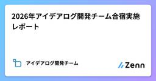
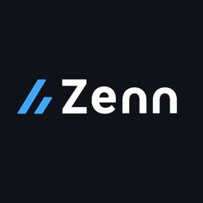
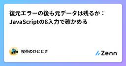
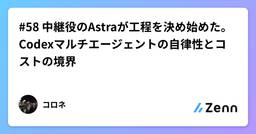
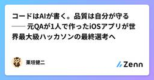
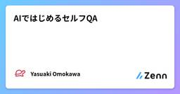

Zennの「QA」のフィード
フィード

2026年アイデアログ開発チーム合宿実施レポート
Zennの「QA」のフィード
株式会社アイデアログでCTOをしている松川です。会場ベストサーチやスペなびといった、会場・スペース探しのサービスを作っています。10月は、開発チームの合宿と、社外のCTO向けイベント（CTO Night & Day）に参加しました。なお、10月19日〜21日に参加したCTO Night & Dayは、会場で聞いた話を外に出さないルールのイベントです。なのでここに書くのは、合宿で起きたことと、イベントから帰ったあとに自分が考えたことだけです。 合宿のテーマを「連携」にした10月15日〜16日に、開発チーム12名で1泊2日の合宿をしました。去年の合宿のテーマは「成...
7時間前

保存データを守るQAケースブック｜操作・想定値・不具合報告の6実例
Zennの「QA」のフィード
保存・復元のあるアプリを作る個人開発者向けに、ダミーデータの準備、操作、期待値、不具合報告、AI・開発者への修正依頼、修正後の確認を6例でまとめた静的な教材です。BOOTHの同名6ケースPDF版と同じ6題材をWeb閲覧用に再構成しています。重複購入にご注意ください。PDF本体は含みません。はじめに・復元1ケース・記録ひな形は無料です。本体アプリや失敗条件の模擬機能、個別の診断・修正・添削は含みません。実DB・通信・端末間の競合や、すべての不具合の発見を保証するものではありません。AI支援で制作しています。
4日前

復元エラーの後も元データは残るか：JavaScriptの8入力で確かめる
Zennの「QA」のフィード
復元の失敗を表示できても、元データを保持できているとは限りません。先に既存データを空にした後でJSONの解析に失敗すると、画面にはエラーが出ても元の2件は消えます。この記事では、人工データだけを扱うJavaScriptの最小モデルで確認します。コード全文を載せているので、商品や外部ライブラリを購入せず再現できます。 この例で決める復元形式version は 1notes は1件以上の配列各レコードは空でない文字列の id と、文字列の body を持つid の重複は拒否する空のバックアップを拒否するのは、この例の仕様です。実アプリで0件への復元を許すかは、別に...
4日前

#58 中継役のAstraが工程を決め始めた。Codexマルチエージェントの自律性とコストの境界
Zennの「QA」のフィード
🍔 はじめにこんにちは！久しぶりの更新です。Codex Desktopで、多数のテストケース（以下、TC）の改善をマルチエージェントで進める検証をしています。目的は、TC改善を終わらせることだけではありません。一般的なデスクトップ環境で、AIによる業務効率化がどこまで再現できるか、どのくらいの作業量まで費用対効果が成り立つかを確かめることです。そのため、検証環境はCodex Desktopに統一しています。CLIに切り替えることは解決策にしません。前半の工程までは、期待どおりの速度で進みました。しかし差分修正の工程に入ると、進みが極端に遅くなりました。調べてみると、メインチャ...
5日前

コードはAIが書く。品質は自分が守る ── 元QAが1人で作ったiOSアプリが世界最大級ハッカソンの最終選考へ
Zennの「QA」のフィード
はじめにコードは、ほとんど書いていません。それでも、品質の責任は自分にあります。英単語学習アプリ「Word Spell Master」を1人で開発し、2026年9月19日に App Store で公開しました。このアプリは、世界最大級のハッカソン「RevenueCat Shipaton 2026」（参加者3万人弱）で、最終選考に進出しました。コードの大半は AI（Claude Code）が書いています。私の担当は、次の4つです。設計の方針を決める受け入れの基準を決めるAI が出した変更を、その説明・テストの結果・実機での動きで確かめて、取り込むかを判断する出してよい...
5日前

AIではじめるセルフQA
Zennの「QA」のフィード
サマリーAI全盛の今、QAの方だけでなく、エンジニアもQAする時代が本格的になってきました。ただ、AI は計画に書かれたとおりに実装します。計画に書かれていないことは実装しません。コードベースを読んで初めて見つかる要求の穴があります。ですので、この記事ではその穴を実装の前に見つける方法を紹介します。自分はこれを define-done という Agentスキルにしています。題材のリポジトリは https://github.com/YasuakiOmokawa/skills で公開しています。 計画どおりに実装しても壊れる例次の例はスキルの評価用に作った架空のものです。利用...
7日前

Playwright の E2E を、ページオブジェクトの route で変更から選んで回す（設計編）
Zennの「QA」のフィード
!この記事は、2026年10月時点で調査・検討している段階の内容です。まだ運用は始まっておらず、ここに書いた設計が正しいかどうかも確かめきれていません。「こうすればうまくいく」という記事ではなく、検討中の考えを共有する記事として読んでいただけるとうれしいです。 はじめにこんにちは！アルダグラムでQAエンジニアをしている千葉です！アルダグラムでは、現場DXサービス「KANNA」を開発・提供しています。KANNA の E2E は Playwright で書いていて、プロダクトとは別のリポジトリで管理しています。突然ですが、E2E はいつ回すのが理想でしょうか。開発中に、変更に...
9日前
Claude Codeで「QAチーム」を組んだら、効いたのは「捨てる仕組み」だった ― AIだけが見つけた不具合・見逃しは？
Zennの「QA」のフィード
SREホールディングス株式会社でプロジェクトマネージャ（PM）をしている鍋谷です。「AIにテストを手伝わせたい。でも、AIの『できました』はどこまで信用していいのか分からない」そんなモヤモヤ、あなたのチームにもありませんか？本記事では、Claude Code で「AIのQAチーム」を組み、社内の業務SaaSで1か月、手動の機能テストを回してみた結果として、AIだけが見つけた不具合、AIが見逃した不具合、そしてAIが自信満々に出してきた誤指摘をどう捨てたかを紹介します。 結論Claude Code のスキルとサブエージェントで「リーダー1・テスター複数・懐疑的な検証者」のQA...
9日前
AI時代におけるQuality Engineeringの教科書
Zennの「QA」のフィード
ITサービス・ソフトウェア開発・プロダクト開発におけるQuality Engineeringを扱う本です。QEの定義から始め、AIによる開発の変化を研究結果とともに整理したうえで、考え方やスキル、具体的な実践を説明します。動画配信サービス「ハイシーン」を例に、要件、テスト設計、生成コードのレビュー、AI評価、リリース、本番運用を学びます。実装が速くなる一方で検証やレビューが追いつかなくなる場面を取り上げ、シフトレフトやコンテキストの集約などの対策も考えます。全16章。実務用の書式を収録しています。
12日前
Claude Code ＋ MagicPod の MCP で、テストの調査から修正まで AI にお願いしている話
Zennの「QA」のフィード
はじめにMagicPod の導入には、今の会社を含めて 2 社で関わってきました。すっかり愛着のあるツールです。最近、MagicPod と AI を組み合わせた記事を見かけることが増えてきて、うれしく思っています。MCP サーバーを通して AI がテスト結果を読み取り、毎朝の確認を楽にしている事例も出てきています。Claude などの AI を仕事で使うのが当たり前になってきました。弊社でやっている Claude Code ＋ MagicPod の使い方も紹介して、MagicPod がもっと広まるきっかけになればと思い、この記事を書きました。いまは、夜間に流れる E2E テス...
13日前
JSTQB AL-TA 不合格体験記(インプットのための周回への飽き対策を考える)
Zennの「QA」のフィード
2026年10月12日（スポーツの日）に、JSTQB Advanced Level テストアナリスト（AL-TA）を受験し、不合格でした。この記事はその不合格体験記です。合格体験記はたくさん書かれていますが、不合格体験記はあまり書かれません。うまくいかなかった勉強法こそ、これから受験する方の参考になると思い、書いてみることにしました。先に結論を書くと、同じ教材を同じ読み方で何周もしたことによる飽きが不合格につながったと考えています。飽きによって集中力が落ち、苦手分野の理解が浅いまま本番を迎えてしまいました。また、2026年11月中旬からは新シラバス（Ver.4.0.J01）に...
13日前
あなたはQA/品質保証に向いている、という話
Zennの「QA」のフィード
はじめに株式会社TOKIUMでQAエンジニアをしている西田です。今回は、これまで公開してきたような技術共有とは趣向を変えて、軽めの雑談を持ってきました。個人の勝手な想像も含めた見解なので、その点ご容赦ください。生成AIが開発に入ってきて、品質保証（QA）の立ち位置もだいぶ変わってきました。コーディングに他職種の人が入ってきやすくなったのと同じで、QAも、AIの手を借りれば未経験の人でもある程度のテストはこなせるようになっています。しかも上流工程が爆速になったので、下流にいるQAがボトルネックになってリリースを止めてしまう心配は、前よりずっと大きくなりました。誰が担当し...
16日前
TRUSTDOCK QAチームが掲げる「伴走する品質保証」とリアルな現在地
Zennの「QA」のフィード
1. はじめに：仕組みの次は「カルチャー」の話をこんにちは！TRUSTDOCKで一人目QAエンジニアとして活動しているyosukenです。前回公開した記事（QAチーム立ち上げて半年を振り返って）では、一人目QAとして入社してから、どのようにQA組織の基盤づくりを進めてきたかについてお伝えしました。これまでの活動を通して、少しずつではありますがQAのプロセスや仕組みの輪郭は見え始めてきました。さらに、9月には待望の2人目となるQAエンジニアも入社しました。これまで一人で立ち上げてきた基盤を、今後は「チーム」として組織全体へ定着させ、スケールさせていく新たなフェーズに入っていま...
16日前
超攻撃的QA / Massive Attack QA - 9.81 PR/人/日の開発に、QAはどう追いつくか
Zennの「QA」のフィード
はじめにカウシェでQAリードをしている亀井です！この記事は、2026年10月20日のJaSST nanoでの登壇内容をまとめたものです。カウシェは、SNSのように毎日開きたくなるECアプリです。発見型のお買い物体験に、ゲームやソーシャルの要素を組み合わせていて、アプリ内で作物を育てると実物の商品が届く「カウシェファーム」などを提供しています。リリースをすればするほど顧客価値があることは定量的に計測できています。高速開発が事業にダイレクトヒットしています。そのためカウシェの開発は速く、2026年9月には9.81 PR/人/日のペースで進んでいます。1週間スプリントの中で、QAは...
17日前
仕様書が整っていないWebアプリの今の挙動をREAで調べ、仕様かどうかを確かめる
Zennの「QA」のフィード
はじめに仕様書が無い、古い、一部しか無い、という既存のWebシステムのテストを頼まれることがあります。仕様書などが整っていない場合は、今の挙動を調べて、それが仕様かどうかを判断する必要があります。今の挙動には不具合も混ざっています。REA（Reverse Engineer Anything）がWebサイトも調べられると知り、公式の練習用アプリで試しました。この記事では、REAで今の挙動の何が取れたか、それをどう記録したか、仕様かどうかの判断にどうつなげるかを書きます。仕様かどうかは、仕様を理解している人が判断します。そこで記録には「正しいと仮置き・仕様ではない」と書き、質問票を...
17日前
紙とペンで挑んだ「テスト千本ノック！」〜新卒エンジニアのWACATE2026夏 1日目参加レポート〜
Zennの「QA」のフィード
はじめにこんにちは！株式会社ログラスで26卒エンジニアの北川(@ykitaaaa)です。WACATE2026 夏 〜テスト千本ノック！〜というイベントに参加してきました。https://wacate.jp/workshops/2026summer/このWACATE(Workshop for Accelerating CApable Testing Engineers)は、ワークショップ等を通じてソフトウェアテストや品質保証について学び、参加者同士で交流することを目的として夏と冬の年に2回開催されるイベントです。参加するきっかけとしては、社内で「こんなイベントがあるよ」と共有が...
17日前
AIがテスト設計書を書く時代、QAの主役は探索チャーターになった
Zennの「QA」のフィード
AIがテスト設計書を書く時代、QAの主役は探索チャーターになった はじめに株式会社ZENKIGENでQAエンジニアをしている横田です。6月の記事「AIと歩む、点の自動化からフローの自動化へ」では、Claude Code を使って QA の業務フロー全体をパイプライン化した話を書きました。仕様書からテスト設計書を作り、テスト設計書からテスト項目書を作る。この流れをスキルとして整えたことで、成果物を作るスピードは大きく上がりました。ところが、リリース前テストにかかる工数は思ったほど減りませんでした。作るのは速くなったのに、テストプロセス全体は速くなっていない。この記事は、その原...
19日前
職能を越えてデザインの品質と向き合うことの難しさとこれから
Zennの「QA」のフィード
はじめに2025年12月に、社内のデザイン標準化プロジェクトの振り返りと今後の展望をまとめました。https://zenn.dev/sonicmoov/articles/design-standardization-project-look-back-2025前回の記事では、今後の方向性として下記の4つを挙げていました。問い合わせの対応フローの自動化デザインデータの品質基準の策定デザインレビューの観点の整理、フローの整備デザイントークンやライブラリの活用促進今回はその続きとして、各項目の進捗と、デザイナーとの協働を通じて見えてきた難しさ、これからの課題をまとめます...
23日前
【git-qa】テスト仕様書を AI に流させて、合否は人が 1 打鍵で置く（human-in-the-loop QA）
Zennの「QA」のフィード
AI に「全部通りました」と言わせたくないAI でテストを自動化すると、最後に AI が「全部通りました」と言います。でも、出したものが壊れていたとき責任を持つのは人です。「AI が通したので」は通りません。git-qa は、その前提のまま作った 人が判定する QA ランナー（human-in-the-loop QA・オープンソース）です。AI がテスト仕様書（検証シート）を流す —— 端末・ブラウザ・デスクトップアプリを操作する人はライブ映像を見て、1 ケースずつ 1 打鍵で合否を置く誰が何を確かめたかが証跡に残る 「誰が確認したか」が残る結果の語は 5 ...
23日前
起票する前に、重複バグを見つけよう
Zennの「QA」のフィード
ログイン画面のバグを例に考えてみます。月曜日にテスターが「ログインのスピナーが回り続ける」と書きました。火曜日にはサポート担当が「パスワード画面の後でサインインできない」と書きました。水曜日には開発者が、トークン更新のタイムアウトに触れた3件目の報告を見つけました。チケットは3件、担当者は3人、バグは1つです。それぞれのチケットが答えの一部を持っています。1件目には手順があり、2件目には待っているお客様がいて、3件目にはログがあります。全体像を誰も見られないまま、同じ問題を誰かが3回トリアージすることになります。重複は不注意の表れではありません。違う人が同じことを違う言葉で表現すると...
1ヶ月前